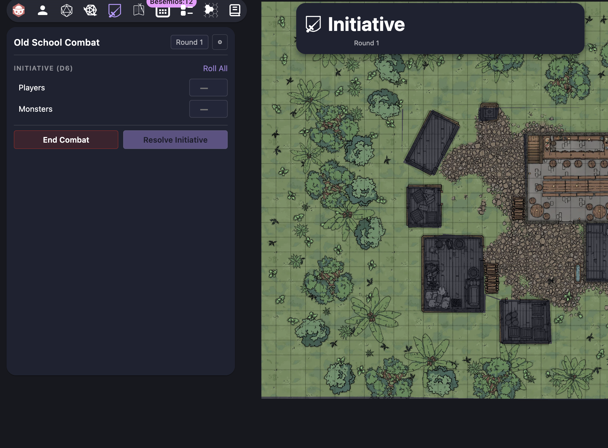
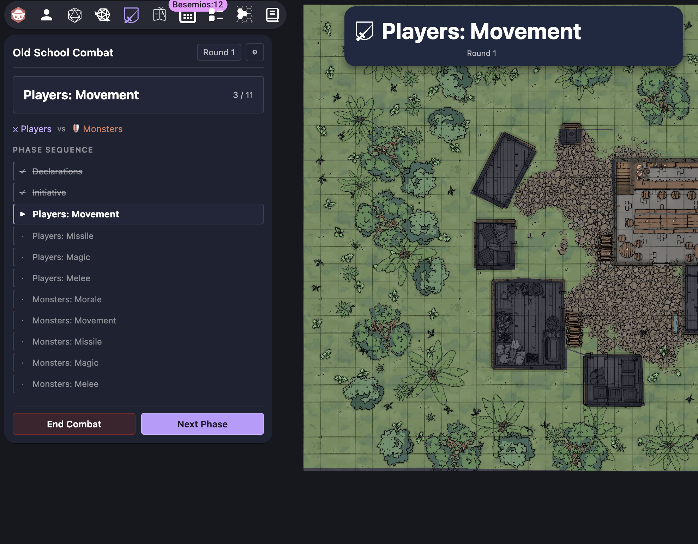

An Owlbear Rodeo extension for tracking classic D&D combat phases.
Players declare intentions — spells, movement — before initiative is rolled. The list is fully configurable.
Enter rolled values or generate them automatically. Ties trigger a reroll. Order is resolved and shared with all players.
Morale, Movement, Missile, Magic, and Melee are run in initiative order for each party, every round.
All players see a phase banner at all times. It updates automatically and can be dismissed between phases.
Add any number of parties beyond the default Players and Monsters for complex encounters.
Optional rule: initiative winners may choose to act after the losers instead of first.


You need to be the GM (room owner) to install extensions.
Click the puzzle-piece icon in the top toolbar, or navigate to Settings → Extensions.
Click Add Extension and paste the manifest URL:
https://old-school-combat.mattwalsh.tech/manifest.json
The extension only activates when a scene is loaded. Open or create a scene, then click the Old School Combat icon in the toolbar to begin.
Set party names, click Begin Combat, step through Declarations and Initiative, then advance each phase with Next Phase. Use ⚙ Settings to configure the initiative die, declarations list, and optional rules.
The current phase is shown in your panel and in a dismissable banner on the map. No action needed — the GM drives the sequence.